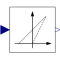

Voltage2DutyCycleLinearly transforms voltage to duty cycle |

|
Diagram
{kind=link}
Information
This information is part of the Modelica Standard Library maintained by the Modelica Association.
Transforms the input voltage signal into a duty cycle:
reciprocal = false and useBipolarVoltage = false: v/VLim = dutyCyclereciprocal = false and useBipolarVoltage = true : v/VLim = 2*dutyCycle - 1reciprocal = true: v/VLim = 1/(1 - dutyCycle)
Parameters (4)
| reciprocal |
Value: false Type: Boolean Description: Enables reciprocal formula between voltage and duty cycle |
|---|---|
| useBipolarVoltage |
Value: true Type: Boolean Description: Enables bipolar input voltage range |
| useConstantVoltageLimit |
Value: true Type: Boolean Description: Enables constant voltage limit |
| VLim |
Value: Type: Voltage (V) Description: Voltage range limit mapped to dutyCycle = 1 resp. 0 |
Connectors (3)
| v |
Type: RealInput Description: Voltage |
|
|---|---|---|
| dutyCycle |
Type: RealOutput Description: Duty cycle |
|
| vLim |
Type: RealInput Description: Voltage limit |
Components (1)
| vLimConst |
Type: Constant Description: Constant voltage limit |
|---|
Used in Examples (3)
|
Modelica.Electrical.PowerConverters.Examples.DCDC.ChopperStepDown Step down chopper with resistive load |
|
|
Modelica.Electrical.PowerConverters.Examples.DCDC.ChopperStepDown Step down chopper with R-L load |
|
|
Modelica.Electrical.PowerConverters.Examples.DCDC.ChopperStepUp Step up chopper with resistive load |
Used in Components (1)
|
Modelica.Electrical.Machines.Examples.ControlledDCDrives.Utilities Switching DC-DC inverter |